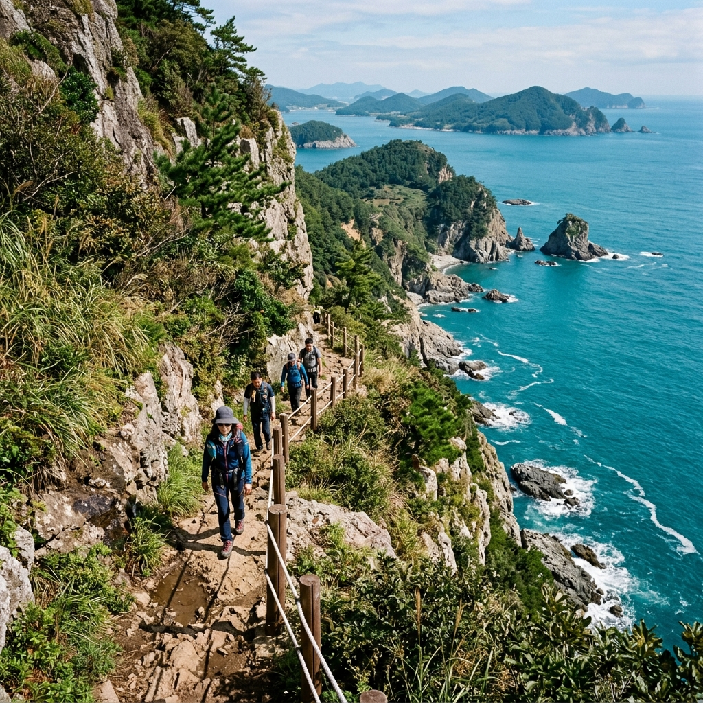
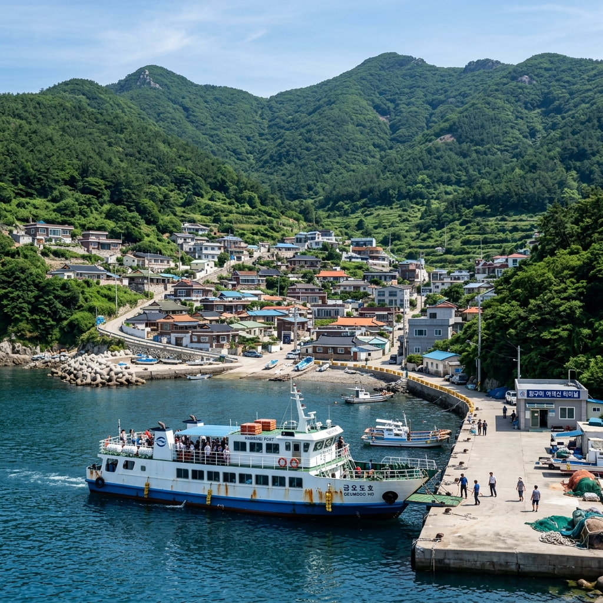
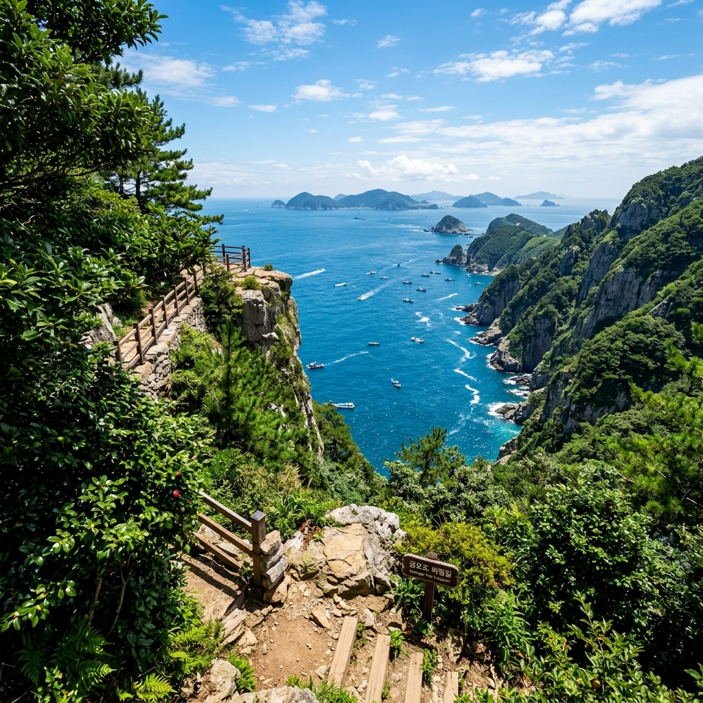

금오도 비렁길 1코스 혼자 걸어본 솔직 후기, 배편 예약과 코스 난이도 비교
✍️ 직접 가보니
여수에서 아침 배를 타고 금오도에 내렸습니다. 비렁길 1코스 입구에서 시작해 함구미 마을에서 직포 해변까지 걸었는데, '비렁'이 '벼랑'의 전라도 방언이라는 게 실제로 와닿았습니다. 바다 위 수십 미터 절벽을 따라 걷는 내내 발아래 에메랄드빛 바다가 펼쳐지고, 바다 바람이 열기를 식혀줘 7월인데도 생각보다 쾌적했습니다. 다만 혼자 가면 길 내내 인기척이 드물어 약간 적막한 느낌도 납니다.
01 금오도 비렁길이란
금오도는 여수 돌산도 남쪽에 위치한 섬으로, 행정구역상 여수시 남면입니다. 비렁길은 섬 해안 절벽(비렁 = 벼랑)을 따라 조성된 트레킹 코스로, 총 5개 코스 약 18.5km에 달합니다.
2011년 코스가 조성된 이후 '숨겨진 명품 트레일'로 알려지기 시작했고, 지금은 전남 대표 트레킹 코스 중 하나로 자리 잡았습니다.
각 코스는 독립적으로 걸을 수 있어 하루에 원하는 코스만 선택해 즐길 수 있습니다. 1코스가 가장 유명하고 경치가 좋아 입문자에게 추천하는 코스입니다.

금오도 비렁길 1코스 해안 절벽 구간 (이미지 제작 예정)
02 5개 코스 난이도 비교
| 코스 |
구간 |
거리 |
소요 |
난이도 |
| 1코스 |
함구미~직포 |
5.0km |
약 2시간 |
중 |
| 2코스 |
직포~굴등 |
3.5km |
약 1.5시간 |
중하 |
| 3코스 |
굴등~학동 |
3.5km |
약 1.5시간 |
중 |
| 4코스 |
학동~심포 |
3.2km |
약 1.5시간 |
하 |
| 5코스 |
심포~장지 |
3.3km |
약 1.5시간 |
중하 |
1코스가 가장 경치가 좋고 대표 포인트가 많아 추천 1순위입니다. 1코스를 완주한 뒤 직포에서 쉬고 복귀하거나, 체력이 되면 2코스까지 연계해 걸을 수 있습니다.
03 배편 예약과 여수 출발 방법
금오도 가는 배는 여수 돌산 신기항과 여수 여객선터미널 두 곳에서 출발합니다.
돌산 신기항(주요 노선): 여수 돌산도로 건너가서 신기항에서 금오도행 배를 탑니다. 소요 시간 약 30분으로 가장 빠릅니다. 여수시내에서 돌산 신기항까지 버스(111번 등) 또는 차로 이동합니다.
배편 예약은 가고싶은섬(island.haewoon.co.kr) 또는 현장 매표가 가능합니다. 성수기 7~8월에는 사전 예약이 필수입니다.
당일치기 일정은 이른 배(오전 7~8시대)로 출발해 1코스 완주 후 오후 배로 복귀하는 것이 일반적입니다.

비렁길 1코스 뷰포인트에서 바라본 에메랄드 바다 (이미지 제작 예정)
04 1코스를 혼자 걸으며 느낀 것들
함구미 마을 선착장에서 시작해 비렁길 1코스 입구 이정표를 따라 올라갑니다. 처음 20분은 오르막인데, 이 구간이 가장 힘듭니다. 정상부에 오르면 절벽 위 길이 펼쳐지고 그때부터는 걸을수록 숨이 트이는 기분입니다.
코스 중 하이라이트는 중간 뷰포인트 데크입니다. 바다 위 80m 절벽 위에 설치된 작은 전망 데크에서 내려다보면 물이 너무 맑아 바닥이 보일 정도입니다.
혼자 걸을 때 느낀 점: 평일 오전에는 만나는 사람이 거의 없어 조용합니다. 그게 장점이기도 하지만, 길을 혼자 걷다 보면 갑자기 적막해지는 구간도 있습니다. 긴급 상황을 대비해 휴대폰 배터리를 충전 상태로 유지하고 가세요.
05 솔직한 장단점 — 다시 갈 의향이 있을까?
[좋았던 점]
- 바다 절벽 위 트레킹이라는 경험 자체가 특별함
- 7월에도 해풍이 불어 생각보다 덥지 않음
- 코스 시작·끝이 마을과 연결돼 있어 식수·화장실 확보 가능
- 코스 이정표가 명확해서 지도 없이도 길 잃을 걱정 없음
[아쉬웠던 점]
- 절벽 구간 일부에 난간이 없어 고소공포증 있는 분에게 부담
- 섬 특성상 편의점 없음 → 물·간식 완전히 자급해야 함
- 배편 시간 제약 때문에 코스 완주 후 여유 시간이 빠듯
- 비 오거나 습할 때 바위 구간 미끄러움 주의

금오도 함구미 마을 선착장 풍경 (이미지 제작 예정)
06 여름 트레킹 필수 준비물
7월 여름 비렁길 트레킹을 위한 필수 아이템들입니다.
신발: 등산화 또는 트레킹화 필수. 슬리퍼·샌들은 미끄러운 바위 구간에서 위험합니다.
물: 1코스 2시간 기준 1인당 최소 1.5L. 섬에 매점이 없으므로 배 타기 전 여수에서 미리 구매.
간식: 에너지바·과일·샌드위치 등 가볍고 포만감 있는 것.
모자·선글라스·선크림: 절벽 위 그늘 없는 구간이 많아 자외선 차단 필수.
트레킹 폴: 초반 오르막과 절벽 구간에서 균형 잡는 데 도움이 됩니다.
우비 또는 방수 재킷: 7월 소나기 대비. 날씨 급변 가능성 있음.
07 여수 연계 1박 2일 추천 코스
여수는 금오도와 함께 당일 또는 1박 2일로 즐기기 좋은 여행지입니다.
추천 코스:
1일차: 여수 오동도 → 오션레일바이크 → 돌산도 향일암 일몰 → 여수 이순신광장 야경
2일차: 이른 배로 금오도 출발 → 비렁길 1코스 → 복귀 후 여수 수산시장 점심
향일암은 새벽 일출 명소이기도 하므로, 1일차 저녁 돌산 숙박 후 2일차 새벽 일출 → 점심 후 금오도 당일치기 루트도 가능합니다.
08 방문 전 체크리스트
□ 배편 사전 예약 (가고싶은섬 사이트 또는 현장)
□ 출발 당일 날씨 확인 (비·강풍 시 배 결항 가능)
□ 등산화 착용
□ 물 1.5L 이상 준비
□ 간식·도시락 준비
□ 선크림·모자·선글라스
□ 스마트폰 GPS 오프라인 지도(maps.me, 네이버지도 저장) 준비
□ 멀미약 (배 이용 30분 전 복용)
📝 작성자 메모
금오도는 처음 갔을 때 "여수에 이런 데가 있다고?" 싶었습니다. 국내 트레킹 코스 중 바다 절벽 위를 걷는 경험이 이렇게 다채로운 곳이 드뭅니다. 1코스만 걸어도 충분히 만족스럽고, 체력이 된다면 1+2코스 연계가 가장 좋습니다. 단, 배 시간을 역산해서 여유 있게 돌아올 수 있도록 시간 계획 먼저 세우세요.
#금오도비렁길
#비렁길1코스
#여수여행
#금오도
#섬트레킹
#여름트레킹
#전남여행
#국내여행
#남해안트레킹
#절벽길